Next: Theory for program bfk Up: Dynamical Susceptibility and Excitations Previous: Magnetic inelastic Scattering Contents Index
Frequently the neutron scattering cross section may be calculated in the dipole approximation, which is valid if 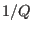 is much larger than the spatial dimension of a subsystem, i.e. the radius of the electron shell. Any deviations from spherical symmetry of the magnetic moment density (due to the crystal electric field) are neglected in this approximation. In the dipole approximation the scattering operator is written as a product of a form-factor and total angular momentum operator:
| 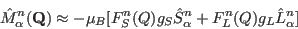 | (255) |
where the spin and orbital -factors
are 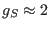 and 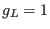, respectively.
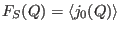 and
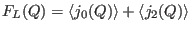 are the spin and orbital form factor for the ion  ,
respectively, whilst
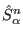 and
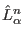 are their total angular momentum operators. We
consider
three cases of the dipole approximation:
,
respectively, whilst
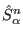 and
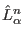 are their total angular momentum operators. We
consider
three cases of the dipole approximation:
[: ] In this case, the full expression of the dipole approximation is used, whereby the scattering operator is replaced by a linear combination of spin and orbital momentum.
[ 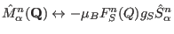:] In many magnetic ions the orbital moment is zero, so it is sufficient to consider only the spin momentum. This is the case for the half filled shells Gd, Eu
, or where the orbital moment is quenched by the crystal field in transition metal ions.
[ 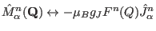:] For rare earth based systems the orbital momentum cannot be neglected, however the spin orbit interaction is very strong so that in many cases it is sufficient to consider only the ground state multiplet according to Hund's rules. In this approximation the spin and orbital momentum are both proportional to the total angular momentumand the magnetisation operator may be written as 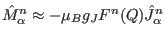 with the form factor 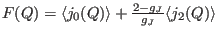. In this approximation the observable is the total angular momentum operator (
denotes the Landé splitting factor).
mcdisp automatically calculates the intensity in dipole approximation and also going beyond, if the single ion module of an ion allows for that, the result is stored in file mcdisp.qei.
In dipole approximation a scattering function without polarisation factor can be defined:
mcdisp can be set to ouput this scattering function, which is sometimes convenient to analyse a model system. However, we have to keep in mind that it does not correspond to a observable in neutron scattering (the polarisation factor is missing and going beyond dipole approximation it depends on the gauge of the orbital magnetic moment density).